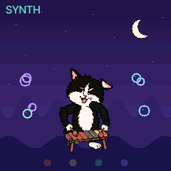
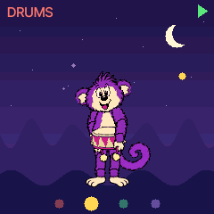
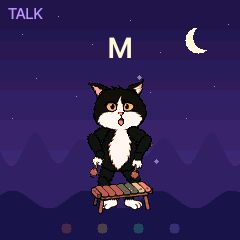
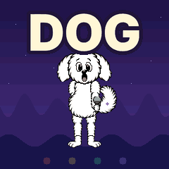

From Chrome or Edge, over the USB cable.
What does it do?
No menus to find, no settings to mind,
and no wrong notes of any kind.

SYNTH
Tap up high, tap down low:
every note's a note to know.
Every key plays a note that fits with all the others. The pet plays along, and sings what was tapped back a bar later.

DRUMS
Boom goes this one, tick goes that.
Hold two down: a beat, like that!
Every key is a drum. A held key keeps its own rhythm going, and BEAT starts a backing pattern to play over.

TALK
A says A and B says B,
all the way to yay past Z.
Each key says its letter in a talking-toy voice and shows it big. TUNE does the same with nursery tunes: every tap is the next note of the song.

FRIENDS
Turn the knob and who comes round?
Each new friend, a brand-new sound.
Monkey, Cat, Dog and Llama. Each says its name and brings its own sound, drum kit, beat and tunes, in a night, a sea, a meadow or the snow.
Get it
Try it here or take it home.
A first public beta. It replaces the firmware on the FM-1: read How to get back before you install, and install at your own risk.
The installer talks to the FM-1 over Web MIDI. The firmware it runs now (stock, Felucca, ChoralRoot or PurpleMonkey) stages the update loader, the loader writes the whole image, then the FM-1 restarts and reports {{PRODUCT}}. Do not unplug it while it writes. An interrupted install resumes when you press Install again: the FM-1 stays in update mode.
If the FM-1 runs Felucca or ChoralRoot, the installer first saves what is stored on it to a file. PurpleMonkey stores nothing and cannot take that backup: keep the file for when you go back.
On the command line, from the source: pip3 install mido python-rtmidi, then python3 tools/fm1_install.py {{PKG}}. --info prints the connected FM-1's identity.
The grown-up page It powers on as the Cat in SYNTH with the beat stopped. The 27 keys are the only things that play; the buttons and knobs change what they play.
Buttons
A lit button is on. A button that does nothing stays dark.
| Printed | PurpleMonkey | Does | More |
|---|---|---|---|
| SEL | SYNTH | the keys play notes | the white keys climb a five-note scale over three octaves; a black key plays the note of the white key on its left. No key is a wrong note |
| FX | DRUMS | the keys play drums | nine sounds, three times over. A held key repeats in its sound's own rhythm, so a few held keys make a groove |
| PLAY | BEAT | the backing beat on and off | a two-bar pattern, the pet's own; in SYNTH a bass and a round of four chords join it |
| ENV | KEYS | in SYNTH: the scale | the pet sings a tapped note back a bar later; two keys held grow a phrase; three quick keys start a run |
| LFO | TUNE | in SYNTH: a nursery tune | any key plays the tune's next note, so mashing one key plays the whole melody; a held key plays it on by itself. Pressed again: the next tune |
| EDIT | TALK | in SYNTH: the alphabet | the keys say A to Z from the lowest up and show the letter big; the last key says "yay" |
| HOME | HOME | the knobs back to normal | after a small hand has turned everything: the pet, the mode, the beat and the world stay |
GLO, SAVE, ARP, SEQ, REC and the two OCT buttons do nothing.
Knobs
| Printed | PurpleMonkey | In SYNTH | In DRUMS |
|---|---|---|---|
| SELECT | PET | Monkey, Cat, Dog, Llama, round and round | the same; the pet says its name |
| PRESETS | SOUND | sixteen sounds, four a pet | the same |
| ALGORITHM | WORLD | night, sea, balloons, space, meadow, snow | the same |
| KNOB 1 | TONE · SPEED | soft to bright (TUNE: its speed) | 72 to 136 beats a minute |
| KNOB 2 | WOBBLE · BUSY | vibrato, none to a lot | how much the beat plays, seven levels |
| KNOB 3 | SPACE · BOUNCE | dry to reverb and echo | straight to a shuffle |
| KNOB 4 | LENGTH · SQUISH | short notes to long ones | woody and short to round and rubbery |
| MASTER | VOLUME | volume | volume |
Every knob is bounded: at either end the sound is still the sound and the beat is still a beat.
Friends
Each pet has its own sound, drum kit, beat, chords and tunes. A new pet says its name.
| No. | Pet | Sounds | Drum kit |
|---|---|---|---|
| 1 | Monkey | a kalimba; a marimba, a toy piano, a steel pan | Latin |
| 2 | Cat | a xylophone; a glockenspiel, a toy organ, a harp | a vintage rhythm box |
| 3 | Dog | a music box; wind chimes, vibes, a rubbery bass | 808 |
| 4 | Llama | pipes; a soft pad, a flute, a small choir | jazz |
Worlds
WORLD changes where the pet is: a night of fireflies, the sea floor, green hills with balloons, the moon, a meadow, snow. A note is a bubble, a balloon, a star, a flower or a puff of snow; a kick is a ripple under the pet's feet.
Tunes
Twinkle Twinkle, Mary Had a Little Lamb, Row Your Boat, Frère Jacques, Old MacDonald, London Bridge, Hot Cross Buns, Itsy Bitsy Spider, Three Blind Mice, Ode to Joy, Jingle Bells and Skip to My Lou. Each pet has three in each world.
The voice
The letters, "yay" and the pets' names are spoken the way the talking toys of 1978 spoke: each word analysed into a few numbers every 12.5 ms and played back through a small filter, about 7 KB for all 33 words. No recording is in the firmware.
MIDI and audio
A MIDI keyboard on USB or the TRS jack plays the pet's synth sound on every note, not only the scale. Channel 10 plays the pet's drum kit (the General MIDI map). CC 120 and CC 123 let every note go.
On a computer the FM-1 is a recording device: channels 1 and 2 are everything, 3 and 4 the synth alone. It still carries ChoralRoot's name there ("ChoralRoot In").
How to get back
To go back to the stock firmware, or on to another one, the FM-1 has to be in update mode.
OCT− + OCT+ + HOME held for 5 seconds.
Three buttons, so that a small hand does not find it. A countdown shows after two seconds; letting go cancels. The installer also starts update mode by itself while PurpleMonkey runs.
For the stock firmware, download the official FM-1 V15 (FM-1.fwsc) yourself from M-VAVE's downloads page and select it under "Return to official V15" in the installer. The browser checks the file; it is not sent anywhere.
If an install fails and the FM-1 no longer starts, recovery needs the unbricker or an FM-1-transporter.
Thank you
PurpleMonkey was made by Quixotic7 with Claude. It is free software under the GPL-3.0: change it, and share what you change.
- ChoralRoot FM-1 by Quixotic7: the tree this was forked from. github.com/Quixotic7/ChoralRootFM1
- Felucca by Leo Kuroshita (@kurogedelic), Hügelton Instruments: the platform, the engines, the installer, the update loader. github.com/hugelton/Felucca
- SLOOP by isod89: the synthesised drum models and their kits. github.com/isod89/sloop-fm1
- FM6: msfa from Dexed (Google, Pascal Gauthier), Apache-2.0.
- Inter Tight by The Inter Project Authors (SIL OFL 1.1, OFL.txt): the UI font, and this page's.
- JieLi AC79 SDK: three files in the package (uboot.boot, cfg_tool.bin, eq_cfg_hw.bin), Apache-2.0.
- The pets: Quixotic7's artwork, generated with ChatGPT.
Every licence: LICENSING.md, GPL-3.0, all texts.